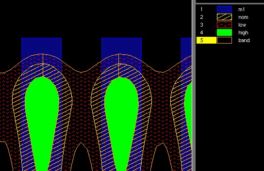

Stochastic
modeling adds functionality to Calibre® OPCverify™
Procedure
- In a text editor, create a Calibre OPCverify
command file with the following characteristics:
LAYOUT PATH "input.oas"
LAYOUT SYSTEM OASIS
LAYOUT PRIMARY "*"
LAYOUT INPUT EXCEPTION SEVERITY PRECISION_RULE_FILE 0
LAYOUT MAGNIFY AUTO
LAYOUT USE DATABASE PRECISION YES
DRC RESULTS DATABASE "output.oas" PSEUDO OASIS
DRC MAXIMUM RESULTS ALL
LAYER m1 0
nom = LITHO EUV OPCVERIFY m1 FILE setup_in MAP nom
low = LITHO EUV OPCVERIFY m1 FILE setup_in MAP low
high = LITHO EUV OPCVERIFY m1 FILE setup_in MAP high
band = LITHO EUV OPCVERIFY m1 FILE setup_in MAP band
m1 { copy m1 } DRC CHECK MAP m1 OASIS 1 0
nom { copy nom } DRC CHECK MAP nom OASIS 2 0
low { copy low } DRC CHECK MAP low OASIS 3 0
high { copy high} DRC CHECK MAP high OASIS 4 0
band { copy band} DRC CHECK MAP band OASIS 5 0
- Save and run the file:
calibre -drc -hier -turbo -turbo_litho filename.svrf
Results
The output OASIS file contains the visual representation
of the stochastic contour based on the stochastic compact model.
